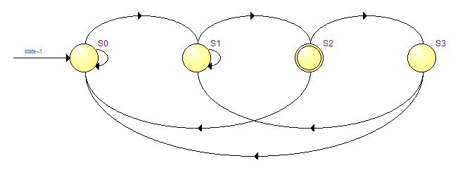

Understanding Digital Logic Design
Joint seminar by Almaty Management University and Imagination Technologies August 23 2016Quiz 2.3. Finite State Machines
Name ___________________________________________________________________
Write near each state diagram the name of the corresponding module:  module top1 ( input clock, input resetn, input a, output y ); parameter [1:0] S0 = 0, S1 = 1, S2 = 2; reg [1:0] state, next_state; // state register always @ (posedge clock or negedge resetn) if (! resetn) state <= S0; else state <= next_state; // next state logic always @* begin next_state = state; case (state) S0: if (! a) next_state = S1; else next_state = S2; S1: if (a) next_state = S2; S2: if (a) next_state = S0; endcase end // output logic assign y = (state == S2); endmodule module top2 ( input clock, input resetn, input a, output y ); parameter [2:0] S0 = 0, S1 = 1, S2 = 2, S3 = 3; reg [1:0] state, next_state; // state register always @ (posedge clock or negedge resetn) if (! resetn) state <= S0; else state <= next_state; // next state logic always @* begin next_state = state; case (state) S0: if (! a) next_state = S1; S1: if (a) next_state = S2; S2: if (a) next_state = S0; else next_state = S3; S3: if (a) next_state = S0; else next_state = S1; endcase end // output logic assign y = (state == S2); endmodule module top3 ( input clock, input resetn, input a, output y ); parameter [2:0] S0 = 0, S1 = 1, S2 = 2, S3 = 3; reg [1:0] state, next_state; // state register always @ (posedge clock or negedge resetn) if (! resetn) state <= S0; else state <= next_state; // next state logic always @* begin next_state = state; case (state) S0: if (! a) next_state = S1; S1: if (a) next_state = S2; S2: if (a) next_state = S3; S3: if (a) next_state = S0; else next_state = S1; endcase end // output logic assign y = (state == S2); endmodule module top4 ( input clock, input resetn, input a, output y ); parameter [1:0] S0 = 0, S1 = 1, S2 = 2; reg [1:0] state, next_state; // state register always @ (posedge clock or negedge resetn) if (! resetn) state <= S0; else state <= next_state; // next state logic always @* begin next_state = state; case (state) S0: if (! a) next_state = S1; S1: if (a) next_state = S2; S2: if (a) next_state = S0; else next_state = S1; endcase end // output logic assign y = (state == S2); endmodule module top5 ( input clock, input resetn, input a, output y ); parameter [1:0] S0 = 0, S1 = 1, S2 = 2; reg [1:0] state, next_state; // state register always @ (posedge clock or negedge resetn) if (! resetn) state <= S0; else state <= next_state; // next state logic always @* begin next_state = state; case (state) S0: if (! a) next_state = S2; S1: if (a) next_state = S2; S2: if (a) next_state = S0; else next_state = S1; endcase end // output logic assign y = (state == S2); endmodule Quiz is created by Yuri Panchul